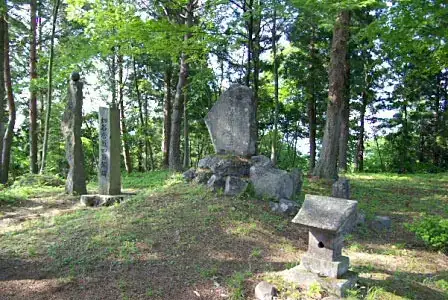
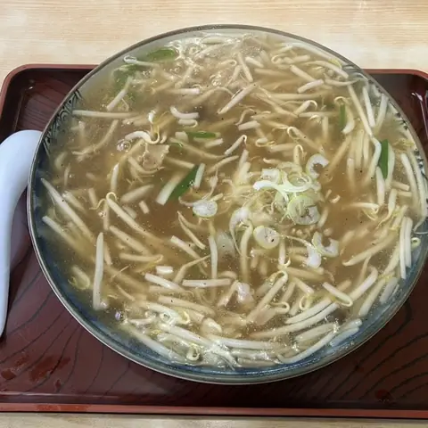
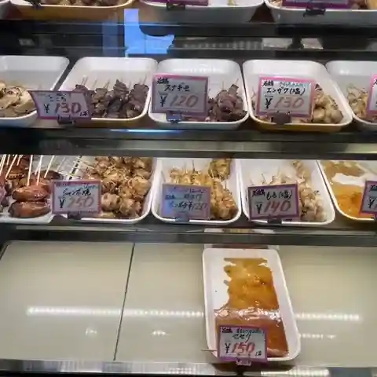
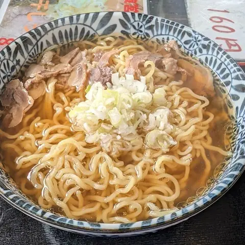
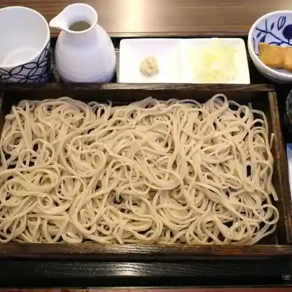
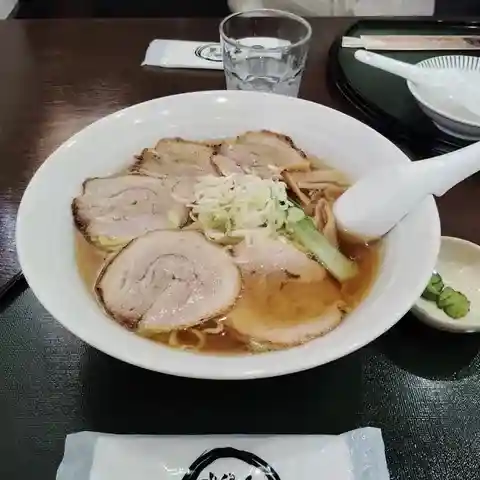
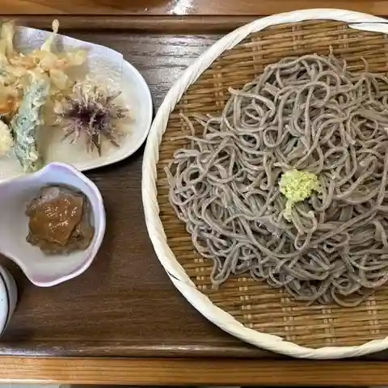
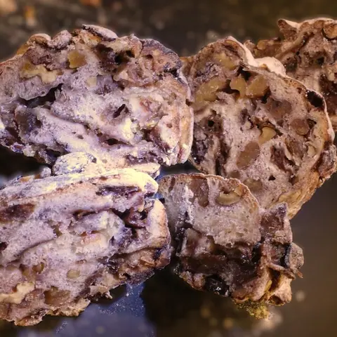
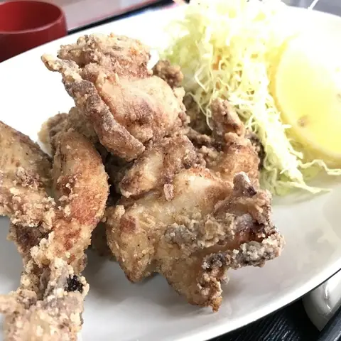

Yamanobe
Yamanobe · Yamagata
Yamanobe
Highlighted on the Yamagata map.

Stay
No listed places to stay in Yamanobe — nearest options in Nakayama.
Dining
山辺栄屋支店

Yamabe Sakae Ya Shiten
Soba restaurant in Yamanobe, Yamagata.
鳥や

Tori Ya
Deli in Yamanobe, Yamagata.
肉そば すみどや

Niku Soba Sumidoya
Soba restaurant in Yamanobe, Yamagata.
蕎麦 やまぶ

Soba Yamabu
Soba restaurant in Yamanobe, Yamagata.
せさみ

Sesami
Chinese restaurant in Yamanobe, Yamagata.
弁天

Benten
Soba restaurant in Yamanobe, Yamagata.
CHEz Le Pain 山形店

Chez Le Pain Yamagata Mise
Bakery in Yamanobe, Yamagata.
ヤマキチ

Yamakichi
Japanese restaurant in Yamanobe, Yamagata.
すみどや
Sumidoya
Takoyaki stand in Yamanobe, Yamagata.
景四季彩々 紅ほたる
Kei Shiki Saisai Kurenai Hotaru
Japanese restaurant in Yamanobe, Yamagata.
十の藏カフェ
Juu No Kura Kafe
Café in Yamanobe, Yamagata.
浪花亭
Naniwa Tei
Soba restaurant in Yamanobe, Yamagata.
中華ダイニング翠蓮
Chuuka Dainingu Suiren
Chinese restaurant in Yamanobe, Yamagata.
かくほん食堂
Kakuhon Shokudou
Shokudo diner in Yamanobe, Yamagata.
喜代松 東店
Kiyomatsu Higashi Mise
Cake shop in Yamanobe, Yamagata.
おやじラーメン
Oyaji Raamen
Ramen shop in Yamanobe, Yamagata.
中華 ほたる
Chuuka Hotaru
Chinese restaurant in Yamanobe, Yamagata.
山辺温泉保養センター
Yamabe Onsen Hoyou Sentaa
Rice-bowl restaurant in Yamanobe, Yamagata.
菓子処 菊屋
Kashi Tokoro Kikuya
Cake shop in Yamanobe, Yamagata.
對龍館
Tsui Ryuu Kan
Ramen shop in Yamanobe, Yamagata.
Cafe Anju
Cafe Anju
Café in Yamanobe, Yamagata.
IPPON
Ippon
Ramen shop in Yamanobe, Yamagata.